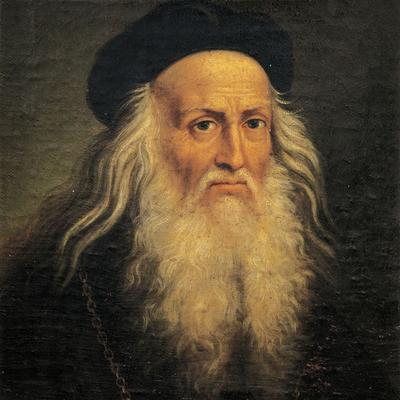

Pablo Picasso
Uno de los artistas más influyentes del siglo XX, conocido por su obra "Guernica" y por cofundar el cubismo.

Vincent van Gogh
Famoso por sus pinceladas expresivas y colores vibrantes, es el autor de obras icónicas como "La Noche Estrellada".

Frida Kahlo
Icono del surrealismo y el arte mexicano, conocida por sus autorretratos profundamente personales y coloridos.

Salvador Dalí
Pintor surrealista conocido por su estilo único y su obra "La Persistencia de la Memoria", con relojes derretidos.

Leonardo da Vinci
Un genio del Renacimiento, autor de obras maestras como "La Última Cena" y "La Mona Lisa".

Claude Monet
Fundador del impresionismo, famoso por su uso de la luz y el color en obras como "Impresión, sol naciente".